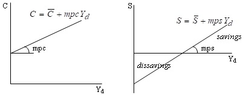

Существует два подхода к объяснению равновесия товарного рынка: классическая и кейнсианская. Кейнсианская модель позволяет определить величину равновесного национального дохода и соответственно величину равновесного объема производства, доказав, что величина совокупного выпуска определяется величиной совокупных расходов, т.е. спрос определяет предложение. Эта модель получила название модели «доходы-расходы». Другое ее название - модель «Кейнсианского креста».
Предпосылки простой Кейнсианской модели:
• Уровень цен не меняется (что справедливо для краткосрочного периода), т.е. P = const, поэтому номинальные показатели совпадают с реальными.
• Ставка процента неизменна, т.е. R = const, что также правомерно для краткосрочного периода.
• Совокупное предложение совершенно эластично, т.е. отсутствует проблема ограниченности ресурсов, и производство способно удовлетворить любой по величине совокупный спрос, что соответствует горизонтальной кривой совокупного предложения.
• ВНП = ЧНП = НД (фирмы обеспечивают такой объем выпуска, что их совокупный доход от продаж равен величине совокупного дохода домохозяйств, т.е. совокупный выпуск = совокупному доходу).
• В экономике отсутствует корпоративный сектор, поэтому доходы фирм превращаются в доходы домохозяйств (коллективных доходов нет, все доходы только личные).
• Налоги только прямые и их платят только домохозяйства.
Сначала рассмотрим двухсекторную модель, в которой действуют только два макроэкономических агента – домохозяйства и фирмы. Поэтому совокупный спрос равен сумме величине потребительских расходов С и величине инвестиционных расходов – I: Y = C + I или Кейнса Yd = С + S.
Кейнсианская функция потребления имеет вид:
C = Ca + mpc × Yd.
Тангенс угла наклона функции потребления равен предельной склонности к потреблению, которая в краткосрочном периоде является постоянной величиной и определяется национальными особенностями страны. Чем больше mpc, тем наклон функции потребления больше (кривая более крутая). Сдвиг кривой может быть обусловлен изменением величины автономного потребления (Сa ), при увеличении которого кривая сдвигается вверх [20, c. 57 - 59].
Функция сбережений Кейнса имеет вид:
S = Yd - C = Yd - ( Ca + mpc × Yd ) = - Ca + mps × Yd .
В кейнсианской модели сбережения (как и потребление) являются функцией только располагаемого текущего дохода и не зависят, например, от ставки процента. График функции сбережений представлен на рис.6.1.

Тангенс угла наклона функции сбережений равен предельной склонности к сбережению. Чем больше mps, тем наклон функции сбережений больше (кривая более крутая). Сдвиг кривой происходит при изменении величины автономного потребления (С ), при увеличении которого кривая сдвигается вниз.
Предельная склонность к потреблению (marginal propensity to consume – mpc ) – это коэффициент, который показывает, на сколько увеличится (уменьшится) потребление при росте (сокращении) дохода на единицу: mpc = ΔC / ΔY ,очевидно, что 0 < mpc < 1.
Предельная склонность к сбережению (marginal propensity to save – mps) – это коэффициент, который показывает, на сколько увеличатся (уменьшатся) сбережения при росте (сокращении) дохода на единицу: mps = ΔS / ΔY , ( 0 < mps < 1).
Сумма предельной склонности к потреблению и предельной склонности к сбережению равна 1:
ΔC ΔS ΔC + ΔS ΔY
mpc + mps = —— + —— = ————— = —— = 1.
ΔY ΔY ΔY ΔY
Из функции потребления Кейнса следовало, что по мере роста дохода доля потребления в доходе C / Yd падает, а доля сбережений в доходе S / Yd - растет. Долю потребления в доходе (т.е. отношение величины потребления к величине дохода) Кейнс назвал средней склонностью к потреблению (average propensity to consume – apc ). Долю сбережений в доходе (т.е. отношение величины сбережений к величине дохода) – средней склонностью к сбережению (average propensity to save – aps ):
C S
apc = —— , ( 0 < apc < 1 ); aps = —— , ( 0 < aps < 1 ).
Yd Yd
Сумма средней склонности к потреблению и средней склонности к сбережению равна 1:
ΔC ΔS ΔC + ΔS ΔYd
apc + aps = —— + —— = ————— = —— = 1.
ΔYd ΔYd ΔYd ΔYd